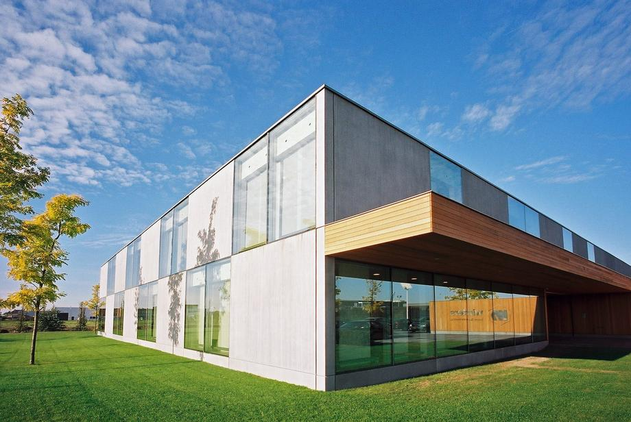

Winters bouw & ontwikkeling versterkt informatievoorziening met DIS Group
Allround bouwonderneming met groeiambitie
Winters bouw & ontwikkeling is een familiebedrijf actief in de utiliteitsbouw en, sinds 2020, ook in de woningbouw. Winters bouw is een allround bouwonderneming die projecten aanneemt, ontwikkelt, ontwerpt en onderhoud uitvoert. Vanuit het bedrijfspand in Breda werken zo’n 60 medewerkers dagelijks aan kwalitatieve en duurzame bouwoplossingen.
Ruim 30 jaar ERP-ervaring binnen de organisatie
Bij Winters is automatisering van financiële processen geen nieuw verhaal. Financieel adjunct-directeur Ton van der List werkt al 30 jaar bij het bedrijf en heeft het ERP-traject vanaf 1990 zien evolueren. Sinds 2007 werkt Winters met Navision van 4PS, waaronder modules voor financiën, projecten, inkoop en service & onderhoud.
Gerichte rapportageontwikkeling met DIS Group
DIS Group is gevraagd om Winters te ondersteunen met betere informatievoorziening en rapportages. Hiervoor heeft DIS de Exsion-rapportages ontwikkeld, inclusief scholing zodat het team van Winters hier zelfstandig mee verder kan. De opgeleverde rapportages richten zich onder andere op projectbewaking, orderportefeuille, debiteurenbewaking, liquiditeitshistorie, liquiditeitsprognoses en verzuimrapportages.
Power BI-dashboards voor snelle en betrouwbare inzichten
Waar eerdere Power BI-initiatieven niet het gewenste resultaat gaven, leverden Edwin Leentfaar en Peter van Schijndel van DIS binnen korte tijd drie standaard Power BI-dashboards op. Deze dashboards vullen Exsion aan en zorgen voor snellere, betrouwbaardere en overzichtelijke informatievoorziening. Het resultaat: aanzienlijke tijdsbesparing, snellere beschikbaarheid van data en minder kans op fouten.
Communicatie en samenwerking die werkt
Volgens Ton communiceren Peter en Edwin prettig, zijn ze eerlijk en goed luisterend, en vertalen ze informatie helder naar passende oplossingen. Dit heeft bijgedragen aan een soepele samenwerking en concrete meerwaarde voor de organisatie.
Een betrouwbare, veelzijdige en flexibele partner
Ton omschrijft DIS Group als een betrouwbare partner met alle kennis in huis: veelzijdig, snel, flexibel en gericht op resultaat, met oplossingen die écht aansluiten bij de praktijk.
